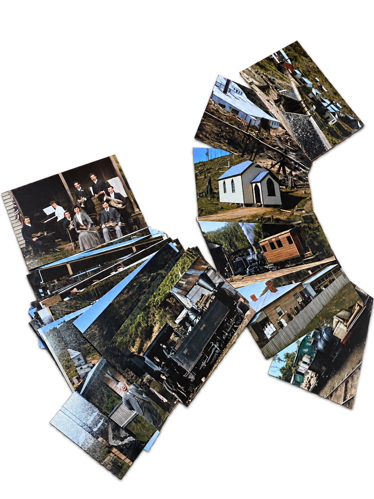

Historic maps & plans
Maps and plans help identify former buildings, tracks, mines and the way the settlement developed across the surrounding country.
Historic images and place-based records help recover the physical world of Magnet: its people, buildings, workings, transport routes and changing landscape.
The research has drawn on historic maps, plans and photographs, including photographs not previously seen in public. Together they provide a powerful record of daily life and the built landscape of the mining community.

Maps and plans help identify former buildings, tracks, mines and the way the settlement developed across the surrounding country.
Images make it possible to see people, structures, machinery and places that have since changed or disappeared.
Some photographs need further work to confirm their subjects, dates and locations. Identifications will be added as the research progresses.